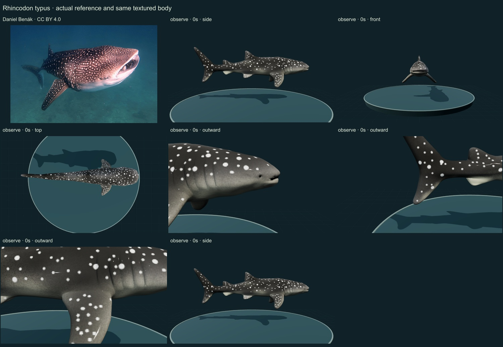
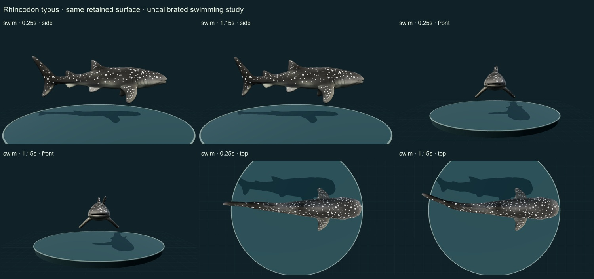

RELEASE 0.6.28 · INITIAL STUDY · 25 OCTOBER 2026
Whale shark
Rhincodon typus
13 actual final rendered states and two credited sheets inspected. This is an automated editorial comparison, without independent specialist review, measured geometry, validated biomechanics or an accuracy percentage.
Body
The selected body has a broad flattened head, near-terminal mouth, five gill slits, two dorsal fins and a longer upper tail lobe. The retained head/body proportions are unmeasured. Longitudinal ridges are too subdued for detailed diagnostic anatomy; no internal filtering screens are built.
Surface
The initial plain-white failure was caused by an obsolete material extension. Conversion restored the creator’s dark surface and pale spotting. Spot sizes and spacing are more uniform than the authentic reference; transverse bars, exact ridge relief and skin microstructure remain incomplete.
Movement
Same body and UV atlas inspected through two lateral-undulation phases and three axes. The integrated centerline retains station lengths; no physiological or fluid-dynamic validation follows from that numerical property. Fin articulation, intermittent glide and active filtration are incomplete.
Changes
- Converted unsupported specular/glossiness source materials to current PBR without remeshing or replacing UVs.
- Added continuous lateral posterior swimming on the retained artist surface.
- Added source-linked anatomy and an authentic Daniel Benák reference, with exact delivered/source-derivative checksums.
- Kept feeding unavailable rather than labelling a swim loop as filtration.
Actual comparison screenshots
Side, front and top views; two swimming phases at 0.25 and 1.15 display seconds; three approximate outward anatomy foci; Observe reset. Detail views show selected regions, not complete orthogonal anatomy. The photograph shows a different individual.


Remaining limitations
- Subdued longitudinal ridges and overly regular spotting require further surface work.
- No morphometric fit, species-specific flow solver or measured tailbeat trajectory.
- Mouth/gill/filter coupling and glide phases are not implemented.
Original-resolution URL derived from the source photo URL; original retrieval timed out. The actual downloaded source is the openly licensed large derivative at downloadUrl; downloadSha256 covers that exact derivative, not inaccessible original-resolution bytes.
Source and access scope
- Florida Museum whale-shark account — Selected morphology, ecological and behavioral account read; not a Smithsonian collection determination or calibrated model validation.
- GBIF accepted species-level linkage — Exact accepted species-rank linkage; not a determination of the artist mesh or photograph.
- Gleiss et al. (2011): convergent evolution in locomotory patterns of flying and swimming animals — Published abstract and selected intermittent locomotion context read; four study species include whale sharks and white sharks. No source trajectories or kinematic parameters fitted; passive gliding remains unimplemented.
- Licensed authentic organism reference — Community research-grade Rhincodon typus determination; source user and creator credit retained. Not an independent specimen identification.
- Whale Shark 3D Model.zip by CanYuTsai — Credited CC BY 4.0 artist mesh, retrieved without sign-in through the Objaverse archive. Artist title is not independent biological identification.
Machine-readable evidence, grants and checksums · Open the same specimen · Release review